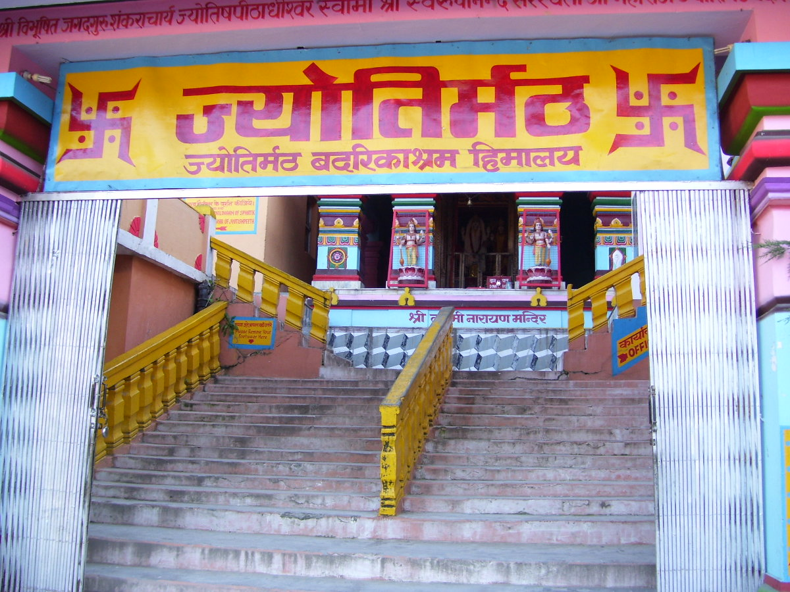

భారతదేశంలో సనాతన ధర్మ పునరుద్ధరణకై జగద్గురు శ్రీ ఆదిశంకరాచార్యులు నాలుగు దిక్కులా నెలకొల్పిన నాలుగు ఆమ్నాయ పీఠాలలో ఉత్తర భారతదేశానికి ఆధ్యాత్మిక కిరీటంలా భాసిల్లుతున్న పరమ పవిత్ర పీఠం శ్రీ ఉత్తరామ్నాయ జ్యోతిర్మఠ పీఠం (జ్యోతిష్పీఠం).
ఈ దివ్యపీఠం ఉత్తరాఖండ్ రాష్ట్రంలోని చమోలీ జిల్లాలో, గఢ్వాల్ హిమాలయాల మధ్య సముద్ర మట్టానికి సుమారు 1,875 మీటర్ల (6,150 అడుగుల) ఎత్తున ఉన్న పవిత్ర జోషిమఠ్ (జ్యోతిర్మఠ్) పట్టణంలో వెలసి ఉంది.
‘జ్యోతిర్మఠం’ అనగా ఆత్మజ్ఞాన జ్యోతిని ప్రసరింపజేసే అమృత ధామం. అథర్వణవేద సంప్రదాయానికి నిలయమైన ఈ పీఠం, శ్రీ బదరీనాథ్ క్షేత్రంతో విడదీయరాని సంబంధాన్ని కలిగి ఉండి వేద విజ్ఞానానికి, సన్యాస సంప్రదాయ పరిరక్షణకు కేంద్ర బిందువుగా నిలుస్తోంది.
శ్రీ జ్యోతిర్మఠం (జ్యోతిష్పీఠం)
జగద్గురు శ్రీ ఆదిశంకరాచార్య స్థాపిత ఉత్తరామ్నాయ పీఠం • జోషిమఠ్, చమోలీ, ఉత్తరాఖండ్

౧. పరిచయం
౨. పీఠ శాస్త్రీయ స్వరూపం & వేద సంప్రదాయం
ఆదిశంకరాచార్యులు తమ 'మఠామ్నాయ సేతు' గ్రంథంలో నిర్దేశించిన జ్యోతిష్పీఠ శాస్త్రీయ వివరాలు:
• ఆమ్నాయ దిశ: ఉత్తరామ్నాయం (ఉత్తర దిక్కు).
• అధిష్ఠిత వేదం: అథర్వణవేదం (ఆధ్యాత్మిక మరియు భౌతిక విజ్ఞాన సమ్మేళనం).
• మహావాక్యం: "అయమాత్మా బ్రహ్మ" (మాండూక్యోపనిషత్తు — ఈ అంతరాత్మయే సాక్షాత్తు పరబ్రహ్మ స్వరూపం).
• ప్రథమ పీఠాధిపతులు: జగద్గురు శంకరాచార్యుల నాల్గవ ప్రధాన శిష్యులైన శ్రీ తోటకాచార్యులు. (ఆనందగిరి అనే పేరుగల ఈ మహనీయుడు గురుసేవలో లీనమై, గురువు అనుగ్రహంతో అపూర్వ వేద జ్ఞానాన్ని పొంది శంకరుని స్తుతిస్తూ ప్రసిద్ధ 'తోటకాష్టకం' రచించి ప్రథమ ఆచార్యులయ్యారు).
• అధిష్ఠాన దేవతలు: పరమేశ్వరుడు — శ్రీ నారాయణుడు (బదరీనాథుడు / బదరీవిశాలుడు) మరియు అధిష్టాన దేవి — శ్రీ పూర్ణగిరి దేవి (మహాకాళి / శక్తిపీఠం).
• సంప్రదాయం: ఆనందవార సంప్రదాయం.
• పవిత్ర తీర్థం: అలకనంద నది (గంగా) మరియు విష్ణుప్రయాగ.
• సన్యాస నామాలు: ఈ పీఠ సంప్రదాయంలో దీక్ష పొందిన సన్యాసులకు 'గిరి', 'పర్వత', 'సాగర' అనే పవిత్ర నామాలు ఉంటాయి.
• పీఠ ప్రాదేశిక పరిధి: ఉత్తరాఖండ్, ఉత్తరప్రదేశ్, హిమాచల్ ప్రదేశ్, పంజాబ్, హర్యానా, రాజస్థాన్, ఢిల్లీ, జమ్మూ-కశ్మీర్, లడఖ్, మరియు మధ్యప్రదేశ్ తదితర ఉత్తర భారత ప్రాంతాలు.
• ఆమ్నాయ దిశ: ఉత్తరామ్నాయం (ఉత్తర దిక్కు).
• అధిష్ఠిత వేదం: అథర్వణవేదం (ఆధ్యాత్మిక మరియు భౌతిక విజ్ఞాన సమ్మేళనం).
• మహావాక్యం: "అయమాత్మా బ్రహ్మ" (మాండూక్యోపనిషత్తు — ఈ అంతరాత్మయే సాక్షాత్తు పరబ్రహ్మ స్వరూపం).
• ప్రథమ పీఠాధిపతులు: జగద్గురు శంకరాచార్యుల నాల్గవ ప్రధాన శిష్యులైన శ్రీ తోటకాచార్యులు. (ఆనందగిరి అనే పేరుగల ఈ మహనీయుడు గురుసేవలో లీనమై, గురువు అనుగ్రహంతో అపూర్వ వేద జ్ఞానాన్ని పొంది శంకరుని స్తుతిస్తూ ప్రసిద్ధ 'తోటకాష్టకం' రచించి ప్రథమ ఆచార్యులయ్యారు).
• అధిష్ఠాన దేవతలు: పరమేశ్వరుడు — శ్రీ నారాయణుడు (బదరీనాథుడు / బదరీవిశాలుడు) మరియు అధిష్టాన దేవి — శ్రీ పూర్ణగిరి దేవి (మహాకాళి / శక్తిపీఠం).
• సంప్రదాయం: ఆనందవార సంప్రదాయం.
• పవిత్ర తీర్థం: అలకనంద నది (గంగా) మరియు విష్ణుప్రయాగ.
• సన్యాస నామాలు: ఈ పీఠ సంప్రదాయంలో దీక్ష పొందిన సన్యాసులకు 'గిరి', 'పర్వత', 'సాగర' అనే పవిత్ర నామాలు ఉంటాయి.
• పీఠ ప్రాదేశిక పరిధి: ఉత్తరాఖండ్, ఉత్తరప్రదేశ్, హిమాచల్ ప్రదేశ్, పంజాబ్, హర్యానా, రాజస్థాన్, ఢిల్లీ, జమ్మూ-కశ్మీర్, లడఖ్, మరియు మధ్యప్రదేశ్ తదితర ఉత్తర భారత ప్రాంతాలు.
౩. ౨,౫౦౦ సంవత్సరాల ప్రాచీన అమర కల్పవృక్షం & శంకర గుహ
జోషిమఠ్లోని జ్యోతిర్మఠ ప్రాంగణంలో సజీవ ఆధ్యాత్మిక అద్భుతంగా నిలిచేది అమర కల్పవృక్షం:
• 2,500 ఏళ్ల పురాతన తుత్ వృక్షం: సుమారు 21 మీటర్ల చుట్టుకొలతతో నిత్య పచ్చదనంతో విలసిల్లే ఈ మల్బరీ (తుత్) వృక్షం కిందనే జగద్గురు శ్రీ ఆదిశంకరాచార్యులు కూర్చుని ఘోర తపస్సు ఆచరించారు.
• బ్రహ్మసూత్ర భాష్య రచన: ఈ కల్పవృక్షం నీడలోనే శంకరులకు దివ్య బ్రహ్మజ్ఞాన జ్యోతి సాక్షాత్కరించింది. ఆయన అద్వైత వేదాంతానికి మూలస్తంభమైన జగత్ ప్రసిద్ధ 'బ్రహ్మసూత్ర భాష్యాన్ని' ఇక్కడే శంకర గుహలో అనుగ్రహించారు.
• నేటికీ భక్తులు ఈ కల్పవృక్షాన్ని, పక్కనే ఉన్న శంకర ధ్యాన గుహను దర్శించి ఆధ్యాత్మిక ప్రశాంతతను పొందుతారు.
• 2,500 ఏళ్ల పురాతన తుత్ వృక్షం: సుమారు 21 మీటర్ల చుట్టుకొలతతో నిత్య పచ్చదనంతో విలసిల్లే ఈ మల్బరీ (తుత్) వృక్షం కిందనే జగద్గురు శ్రీ ఆదిశంకరాచార్యులు కూర్చుని ఘోర తపస్సు ఆచరించారు.
• బ్రహ్మసూత్ర భాష్య రచన: ఈ కల్పవృక్షం నీడలోనే శంకరులకు దివ్య బ్రహ్మజ్ఞాన జ్యోతి సాక్షాత్కరించింది. ఆయన అద్వైత వేదాంతానికి మూలస్తంభమైన జగత్ ప్రసిద్ధ 'బ్రహ్మసూత్ర భాష్యాన్ని' ఇక్కడే శంకర గుహలో అనుగ్రహించారు.
• నేటికీ భక్తులు ఈ కల్పవృక్షాన్ని, పక్కనే ఉన్న శంకర ధ్యాన గుహను దర్శించి ఆధ్యాత్మిక ప్రశాంతతను పొందుతారు.
౪. బదరీనాథ్ శీతాకాల గద్దె & శ్రీ నరసింహ ఆలయం
జ్యోతిర్మఠానికి మరియు బదరీనాథ్ మహాధామానికి మధ్య విడదీయరాని పవిత్ర బంధం ఉంది:
• శీతాకాల బదరీనాథ పూజలు: నవంబర్ నుండి ఏప్రిల్ వరకు విపరీతమైన మంచు కారణంగా బదరీనాథ్ ప్రధాన ఆలయం మూసివేయబడినప్పుడు, బదరీవిశాలుని ఉత్సవమూర్తిని మరియు ప్రధాన అర్చకులైన రావల్జీని డోలీలో జోషిమఠ్కు తీసుకువస్తారు.
• శ్రీ నరసింహ ఆలయం: జోషిమఠ్లోని ప్రసిద్ధ శ్రీ నరసింహ దేవాలయంలో మరియు వాసుదేవ ఆలయంలో బదరీనాథునికి శీతాకాలపు ఆరు నెలల పాటు నిత్య పూజలు, నైవేద్యాలు ఘనంగా జరుగుతాయి. అందువల్ల జోషిమఠ్ను బదరీనాథ్ శీతాకాల రాజధానిగా భావిస్తారు.
• శీతాకాల బదరీనాథ పూజలు: నవంబర్ నుండి ఏప్రిల్ వరకు విపరీతమైన మంచు కారణంగా బదరీనాథ్ ప్రధాన ఆలయం మూసివేయబడినప్పుడు, బదరీవిశాలుని ఉత్సవమూర్తిని మరియు ప్రధాన అర్చకులైన రావల్జీని డోలీలో జోషిమఠ్కు తీసుకువస్తారు.
• శ్రీ నరసింహ ఆలయం: జోషిమఠ్లోని ప్రసిద్ధ శ్రీ నరసింహ దేవాలయంలో మరియు వాసుదేవ ఆలయంలో బదరీనాథునికి శీతాకాలపు ఆరు నెలల పాటు నిత్య పూజలు, నైవేద్యాలు ఘనంగా జరుగుతాయి. అందువల్ల జోషిమఠ్ను బదరీనాథ్ శీతాకాల రాజధానిగా భావిస్తారు.
౫. చతురామ్నాయ పీఠాల సమగ్ర దివ్య స్వరూపం
జగద్గురు శ్రీ ఆదిశంకరాచార్యులు స్థాపించిన నాలుగు ఆమ్నాయ పీఠాల సంపూర్ణ సమాహారం:
౧. పూర్వామ్నాయం: శ్రీ గోవర్ధన పీఠం (పూరీ, ఒడిశా) — ఋగ్వేదం — ప్రజ్ఞానం బ్రహ్మ (శ్రీ పద్మపాదాచార్యులు).
౨. దక్షిణామ్నాయం: శ్రీ శారదా పీఠం (శృంగేరి, కర్ణాటక) — యజుర్వేదం — అహం బ్రహ్మాస్మి (శ్రీ సురేశ్వరాచార్యులు).
౩. పశ్చిమామ్నాయం: శ్రీ ద్వారకా శారదా పీఠం (ద్వారక, గుజరాత్) — సామవేదం — తత్త్వమసి (శ్రీ హస్తామలకాచార్యులు).
౪. ఉత్తరామ్నాయం: శ్రీ జ్యోతిర్మఠ పీఠం (జోషిమఠ్, ఉత్తరాఖండ్) — అథర్వణవేదం — అయమాత్మా బ్రహ్మ (శ్రీ తోటకాచార్యులు).
౧. పూర్వామ్నాయం: శ్రీ గోవర్ధన పీఠం (పూరీ, ఒడిశా) — ఋగ్వేదం — ప్రజ్ఞానం బ్రహ్మ (శ్రీ పద్మపాదాచార్యులు).
౨. దక్షిణామ్నాయం: శ్రీ శారదా పీఠం (శృంగేరి, కర్ణాటక) — యజుర్వేదం — అహం బ్రహ్మాస్మి (శ్రీ సురేశ్వరాచార్యులు).
౩. పశ్చిమామ్నాయం: శ్రీ ద్వారకా శారదా పీఠం (ద్వారక, గుజరాత్) — సామవేదం — తత్త్వమసి (శ్రీ హస్తామలకాచార్యులు).
౪. ఉత్తరామ్నాయం: శ్రీ జ్యోతిర్మఠ పీఠం (జోషిమఠ్, ఉత్తరాఖండ్) — అథర్వణవేదం — అయమాత్మా బ్రహ్మ (శ్రీ తోటకాచార్యులు).
౬. పరిసర ముఖ్య దర్శనీయ స్థలాలు
• జ్యోతిర్మఠం & ఆదిశంకర గుహ: శంకరాచార్యులు తపస్సు చేసిన గుహ మరియు అఖండ ధ్యాన మందిరం.
• అమర కల్పవృక్షం: 25 శతాబ్దాల ప్రాచీన పవిత్ర వృక్షం.
• శ్రీ నరసింహ స్వామి దేవాలయం: శాలిగ్రామ శిలతో స్వయంభువుగా వెలసిన నారసింహుని మందిరం.
• విష్ణుప్రయాగ (12 కి.మీ): పంచప్రయాగలలో మొదటిది; అలకనంద మరియు ధౌలీగంగ నదులు కలిసే పరమ పవిత్ర సంగమ స్థలం.
• ఔలీ (Auli - 14 కి.మీ): జోషిమఠ్ నుండి కేబుల్ కార్ (రోప్వే) ద్వారా చేరుకునే ప్రపంచ ప్రసిద్ధ హిమ క్రీడా కేంద్రం మరియు హిమాలయ నందాదేవి పర్వత దర్శన స్థలం.
• శ్రీ బదరీనాథ్ ధామం (సుమారు 45 కి.మీ): చతుర్ధామాలలో ప్రసిద్ధ వైష్ణవ దివ్యక్షేత్రం.
• అమర కల్పవృక్షం: 25 శతాబ్దాల ప్రాచీన పవిత్ర వృక్షం.
• శ్రీ నరసింహ స్వామి దేవాలయం: శాలిగ్రామ శిలతో స్వయంభువుగా వెలసిన నారసింహుని మందిరం.
• విష్ణుప్రయాగ (12 కి.మీ): పంచప్రయాగలలో మొదటిది; అలకనంద మరియు ధౌలీగంగ నదులు కలిసే పరమ పవిత్ర సంగమ స్థలం.
• ఔలీ (Auli - 14 కి.మీ): జోషిమఠ్ నుండి కేబుల్ కార్ (రోప్వే) ద్వారా చేరుకునే ప్రపంచ ప్రసిద్ధ హిమ క్రీడా కేంద్రం మరియు హిమాలయ నందాదేవి పర్వత దర్శన స్థలం.
• శ్రీ బదరీనాథ్ ధామం (సుమారు 45 కి.మీ): చతుర్ధామాలలో ప్రసిద్ధ వైష్ణవ దివ్యక్షేత్రం.
౭. యాత్రికులకు సమాచారం & రవాణా మార్గాలు
భౌగోళిక స్థానం: జ్యోతిర్మఠం (జోషిమఠ్), చమోలీ జిల్లా, ఉత్తరాఖండ్ (పిన్ కోడ్: 246443).
చేరుకునే మార్గాలు:
• రైలు మార్గం: సమీప రైల్వే స్టేషన్లు రిషికేశ్ / యోగ నగరి రిషికేశ్ (సుమారు 250 కి.మీ), హరిద్వార్ (సుమారు 275 కి.మీ).
• విమాన మార్గం: డెహ్రాడూన్లోని జాలీ గ్రాంట్ విమానాశ్రయం (DED) సుమారు 270 కి.మీ దూరంలో ఉంది.
• రోడ్డు మార్గం: హరిద్వార్, రిషికేశ్ నుండి దేవప్రయాగ్, శ్రీనగర్, రుద్రప్రయాగ్, కర్ణప్రయాగ్, చమోలీ మీదుగా జాతీయ రహదారి (NH 7) ద్వారా నేరుగా బస్సులు, ట్యాక్సీలు నిరంతరం నడుస్తాయి.
చేరుకునే మార్గాలు:
• రైలు మార్గం: సమీప రైల్వే స్టేషన్లు రిషికేశ్ / యోగ నగరి రిషికేశ్ (సుమారు 250 కి.మీ), హరిద్వార్ (సుమారు 275 కి.మీ).
• విమాన మార్గం: డెహ్రాడూన్లోని జాలీ గ్రాంట్ విమానాశ్రయం (DED) సుమారు 270 కి.మీ దూరంలో ఉంది.
• రోడ్డు మార్గం: హరిద్వార్, రిషికేశ్ నుండి దేవప్రయాగ్, శ్రీనగర్, రుద్రప్రయాగ్, కర్ణప్రయాగ్, చమోలీ మీదుగా జాతీయ రహదారి (NH 7) ద్వారా నేరుగా బస్సులు, ట్యాక్సీలు నిరంతరం నడుస్తాయి.
౮. దర్శన వేళలు & అధికారిక సమాచారం
దర్శన సమయాలు: ఉదయం 6:00 నుండి మధ్యాహ్నం 12:00 వరకు; సాయంత్రం 4:00 నుండి రాత్రి 8:00 వరకు.
అధికారిక వెబ్సైట్:
• శ్రీ ఉత్తరామ్నాయ బదరీ జ్యోతిర్మఠం అధికారిక పోర్టల్ (badarijyotirmath.org)
అధికారిక వెబ్సైట్:
• శ్రీ ఉత్తరామ్నాయ బదరీ జ్యోతిర్మఠం అధికారిక పోర్టల్ (badarijyotirmath.org)
౯. ఆధార గ్రంథాలు
• మఠామ్నాయ సేతు & మఠామ్నాయ ఉపనిషత్తు (జగద్గురు శ్రీ ఆదిశంకరాచార్య ప్రణీతం)
• మాండూక్యోపనిషత్తు — అథర్వణవేదం
• శ్రీ తోటకాచార్య విరచిత తోటకాష్టకం
• స్కంద పురాణం — కేదారఖండం & బదరీకాశ్రమ వర్ణన
• మాండూక్యోపనిషత్తు — అథర్వణవేదం
• శ్రీ తోటకాచార్య విరచిత తోటకాష్టకం
• స్కంద పురాణం — కేదారఖండం & బదరీకాశ్రమ వర్ణన
౧౦. ముగింపు
హిమవత్పర్వతాల నిశ్చల గంభీరత నడుమ, అమర కల్పవృక్ష చల్లని నీడలో ఆవిర్భవించిన శ్రీ జ్యోతిర్మఠ పీఠం సకల జీవులకు అంతర్గత ఆత్మజ్యోతిని ప్రసాదించే జ్ఞాన భాండాగారం.
'అయమాత్మా బ్రహ్మ' అనే ఉపనిషత్ సత్యాన్ని గ్రహించి, సమస్త జగత్తులో పరమాత్మను దర్శించే అద్వైత భావనను ఈ పీఠ దర్శనం అనుగ్రహిస్తుంది.
"విదితాఖిల శాస్త్ర సుధా జలధే మహితోపనిషత్కథితార్థ నిధే |
హృదయే కలయే విమలం చరణం భవ శంకర దేశిక మే శరణమ్ ||"
శ్రీ ఆదిశంకర భగవత్పాదులకి జై • ఓం నమో నారాయణాయ!
'అయమాత్మా బ్రహ్మ' అనే ఉపనిషత్ సత్యాన్ని గ్రహించి, సమస్త జగత్తులో పరమాత్మను దర్శించే అద్వైత భావనను ఈ పీఠ దర్శనం అనుగ్రహిస్తుంది.
"విదితాఖిల శాస్త్ర సుధా జలధే మహితోపనిషత్కథితార్థ నిధే |
హృదయే కలయే విమలం చరణం భవ శంకర దేశిక మే శరణమ్ ||"
శ్రీ ఆదిశంకర భగవత్పాదులకి జై • ఓం నమో నారాయణాయ!
✦ సర్వే జనాః సుఖినో భవంతు • ఓం శ్రీ తోటకాచార్య ప్రసాదిత జ్యోతిర్మఠాయ నమః ✦